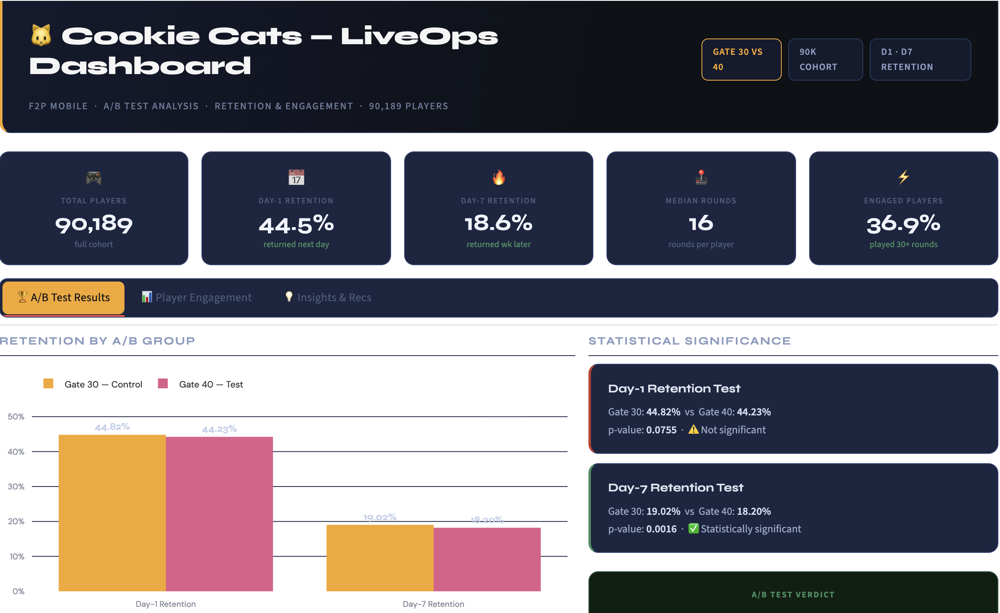
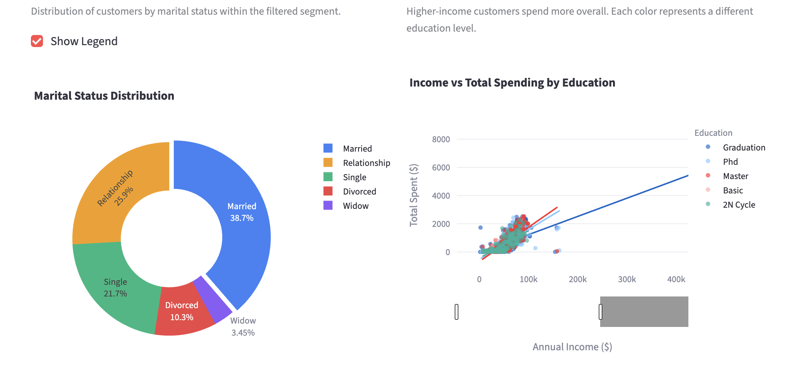
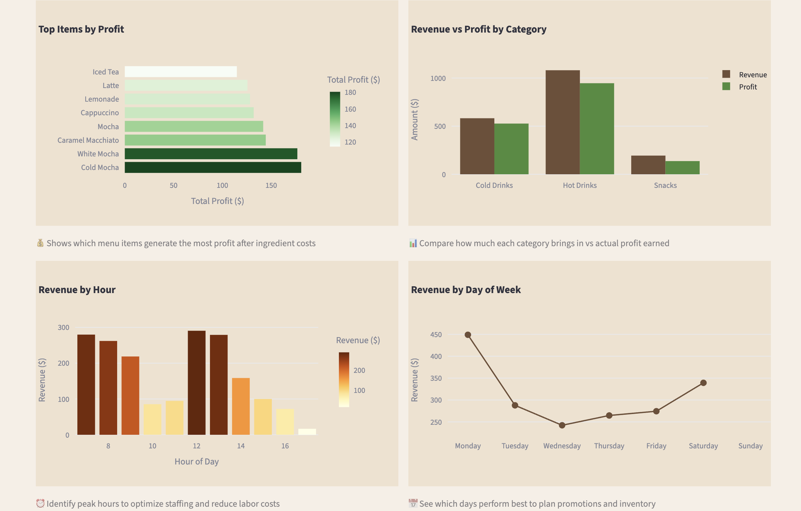

Joseph Nagothu
Business Analytics graduate student focused on game analytics, A/B testing, retention modeling, and performance dashboards.
Technical Skills
Business Analytics graduate student focused on game analytics, A/B testing, retention modeling, and performance dashboards.

F2P mobile game analytics dashboard analyzing a real 90k-player A/B test on gate placement. Covers Day-1 & Day-7 retention, statistical significance testing, player engagement segmentation, and data-driven LiveOps recommendations.

Interactive dashboard analyzing 2,237 retail customers across demographics, spending patterns, and purchase channels. Explores how income, education, and marital status drive spending behavior across web, store, and catalog channels.

Operational analytics dashboard analyzing revenue drivers, ingredient costs, labor impact, and profit margins to surface cost-saving opportunities and improve unit economics.